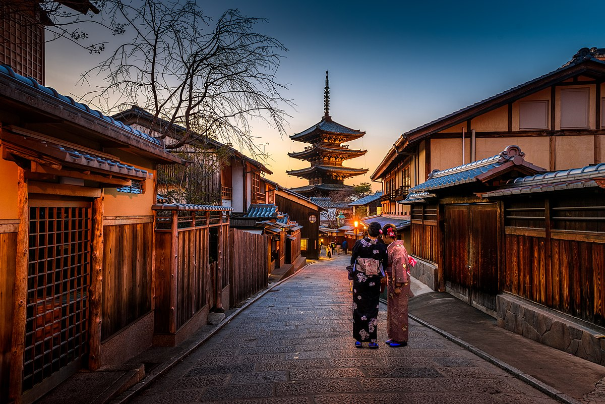

Kyoto, Japonia

Kyoto, położone w sercu Japonii, jest miastem bogatym w historię, tradycję i piękno. Jest to miejsce, które zachowało wiele z kulturowego dziedzictwa kraju, stanowiąc jednocześnie ośrodek nowoczesności i innowacji. Od starożytnych świątyń po malownicze ogrody, każdy zakątek Kyoto kryje w sobie niezwykłe piękno i znaczenie kulturowe.
**Najważniejsze atrakcje turystyczne w Kyoto:**
1. **Świątynia Kinkaku-ji (Złoty Pawilon)**: Jedna z najbardziej ikonicznych budowli w Japonii, znana ze swojej złotej fasady odbijającej się w stawie, tworząc niezapomniany widok.
2. **Świątynia Kiyomizu-dera**: Zbudowana na wysokim klifie, ta świątynia oferuje wspaniałe widoki na miasto i jest szczególnie malownicza podczas kwitnienia wiśni.
3. **Arashiyama Bamboo Grove**: To magiczne miejsce oferuje spacer wśród gigantycznych bambusów, tworząc niezwykłą atmosferę spokoju i uroku.
4. **Gejsze w dzielnicy Gion**: Dzielnica Gion to dom dla tradycji gejsz, gdzie można spotkać te wyjątkowe artystki, podziwiać ich eleganckie stroje i uczestniczyć w tradycyjnych ceremoniach herbaty.
5. **Pałac Cesarski w Kioto (Kyoto Gosho)**: Była siedziba cesarzy Japonii, teraz otwarta dla zwiedzających, prezentuje piękne ogrody i architekturę.
6. **Filozoficzna ścieżka (Tetsugaku no Michi)**: Ta malownicza ścieżka wzdłuż kanałów zapewnia spokojną przestrzeń do refleksji i kontemplacji.
7. **Fushimi Inari Taisha**: Znana ze swoich tysięcy czerwonych bram torii, to sanktuarium jest poświęcone bogowi ryżu, Inariemu, i jest ważnym miejscem kultu.
To tylko kilka z niezliczonych atrakcji, jakie oferuje Kyoto. Miasto to przyciąga podróżnych z całego świata swoją bogatą historią, pięknymi krajobrazami i głębokim szacunkiem dla tradycji japońskiej kultury.
Powrót do strony głównej